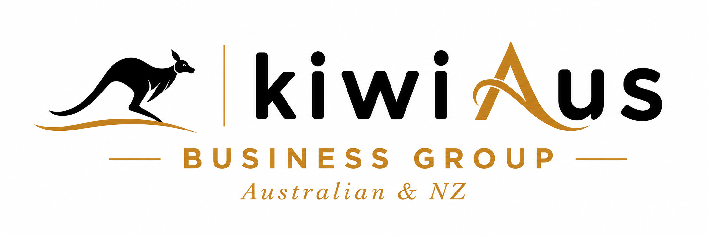

أستراليا
حلول الشركات الأسترالية
تأسيس شركات Pty Ltd الأسترالية، ودعم طلبات ACN وABN، وإعداد الوثائق المؤسسية، وتنفيذ تغييرات الشركة، وخدمات العنوان، ونقل الملكية، والإدارة المؤسسية المستمرة.

نساعد العملاء الدوليين والشركاء المهنيين على تأسيس الشركات وشرائها وهيكلتها وتشغيلها في أستراليا ونيوزيلندا، مع دعم عملي يبدأ من مرحلة الإعداد الأولى ويستمر مع الإدارة المؤسسية والمتطلبات التشغيلية اللاحقة.
نعمل مع رواد الأعمال والشركات الدولية والمستثمرين والمستشارين المهنيين الراغبين في دخول أسواق أستراليا ونيوزيلندا.
تتمتع KiwiAus بخبرة عملية تزيد على عشر سنوات في تأسيس الشركات وهيكلتها ودعم الأعمال في أستراليا ونيوزيلندا. نساعد العملاء على إنشاء هياكل مؤسسية عملية ونواصل دعمهم مع تطور أعمالهم.
أكثر من 10 سنوات من الخبرة العملية في التعامل مع الشركات الأسترالية والنيوزيلندية.
دعم مباشر خلال تأسيس الشركة وإعداد هيكلها وتنفيذ تغييرات الملكية المعتمدة.
إعداد احترافي للوثائق والسجلات المؤسسية للعملاء الدوليين والشركاء المهنيين.
حلول مصممة وفقاً لطبيعة النشاط التجاري وهيكل الملكية والأهداف التجارية المقصودة.
احصل على خدمات احترافية لتأسيس الشركات والدعم المؤسسي في أستراليا ونيوزيلندا من خلال علاقة عمل واحدة.
تأسيس شركات Pty Ltd الأسترالية، ودعم طلبات ACN وABN، وإعداد الوثائق المؤسسية، وتنفيذ تغييرات الشركة، وخدمات العنوان، ونقل الملكية، والإدارة المؤسسية المستمرة.
تأسيس الشركات في نيوزيلندا، ودعم NZBN وسجل الشركات، ووثائق المديرين والمساهمين، وخدمات المكتب المسجل، وتغييرات الشركة، والإدارة المؤسسية المستمرة.
يعتمد الهيكل المناسب على أهداف العميل وطبيعة نشاطه التجاري ومتطلبات الملكية ومدى جاهزية المستندات.
يتم تأسيس شركة جديدة في أستراليا أو نيوزيلندا وفق الهيكل المعتمد للعميل وباستخدام بيانات المديرين والمساهمين ذات الصلة.
تنسق KiwiAus عملية التأسيس، وتعد الوثائق المؤسسية المتفق عليها، وتقدم الدعم خلال المراحل الرئيسية لإعداد الشركة.
عندما يكون ذلك متاحاً ومناسباً، يمكن تأسيس الشركة وتجهيز إطارها المؤسسي الأولي قبل إتمام تغييرات الملكية والمناصب المعتمدة للعميل.
يتم إعداد سجلات الشركة والقرارات والوثائق المؤسسية الداعمة كجزء من عملية إتمام أو نقل منظمة.
يتم تحديد نطاق الخدمة بدقة وفق الدولة والهيكل المؤسسي وطبيعة النشاط التجاري والمتطلبات العملية لكل عميل.
تأسيس الشركات في أستراليا ونيوزيلندا وإعداد وثائق التأسيس الرئيسية.
سجلات الشركة ووثائق الأسهم والقرارات وغيرها من السجلات المؤسسية المشمولة ضمن الحل المتفق عليه.
دعم التسجيلات المتعلقة بالشركة والنشاط التجاري حيثما تنطبق على الهيكل المختار.
تغييرات المديرين والمساهمين والملكية مع إعداد الوثائق المؤسسية الداعمة.
خدمات المكتب المسجل وعنوان العمل والمراسلات عندما تكون مشمولة ضمن الباقة المتفق عليها.
مساعدة عملية بعد تأسيس الشركة أو نقلها، بما في ذلك التغييرات المؤسسية اللاحقة والإدارة المستمرة.
للعملاء الدوليين المعتمدين الذين يحتاجون إلى مستوى أعلى من الدعم المحلي، يمكن لـ KiwiAus تقديم أو تنسيق إدارة مؤسسية موسعة، وتمثيل محلي، ودعم المديرين، وتغييرات الشركة، والمساعدة التشغيلية المستمرة في أستراليا ونيوزيلندا، حيثما يسمح القانون وبما يخضع للمتطلبات المعمول بها.
ترحب KiwiAus بالتعاون مع شركات تأسيس الشركات ومقدمي الخدمات المؤسسية والمحاسبين والاستشاريين والمحامين والمستشارين المهنيين حول العالم. ويمكننا العمل كشريكك في خدمات الشركات بأستراليا ونيوزيلندا، وتوفير البنية المحلية وإعداد الشركات والدعم المستمر، بينما تحافظ أنت على علاقتك المباشرة مع عميلك.
دعم مجموعة مختارة من هياكل الصناديق الاستئمانية والهياكل المؤسسية في نيوزيلندا للعملاء الدوليين، بما في ذلك تنسيق الإنشاء، وإعداد الوثائق، ودعم التسجيل، والإدارة المستمرة عند الاقتضاء، مع مراعاة المتطلبات القانونية والضريبية والمهنية المعمول بها.
عندما يحتاج العملاء إلى مساعدة في مسائل الهجرة المرتبطة بأستراليا، يمكن لـ KiwiAus تنسيق الوصول إلى الدعم المهني المناسب. ولا يتم تقديم استشارات الهجرة إلا حيثما يسمح القانون ومن خلال مهنيين مؤهلين بالشكل المطلوب.
يتجاوز عملنا مجرد تقديم طلب تسجيل شركة. نركز على إنشاء هياكل مؤسسية عملية، وإعداد وثائق احترافية، وتوفير دعم مستمر مع تطور الأعمال في أستراليا أو نيوزيلندا.
تظل عمليات تأسيس الشركات والتعيينات وخدمات المديرين وتغييرات الملكية والخدمات المتعلقة بالصناديق الاستئمانية وغيرها من الحلول المؤسسية خاضعة للقوانين المعمول بها، والمعلومات المطلوبة، وفحوصات الهوية والامتثال، والإجراءات الحكومية، والاستشارات المهنية عند الحاجة، ومتطلبات مقدمي الخدمات الخارجيين ذوي الصلة.
أخبرنا ما إذا كنت تحتاج إلى شركة أسترالية، أو شركة نيوزيلندية، أو حلاً مؤسسياً مُداراً، أو دعماً مهنياً عبر كلا السوقين.
✉ تواصل معنا عبر البريد الإلكتروني WhatsApp: +61 413 564 200